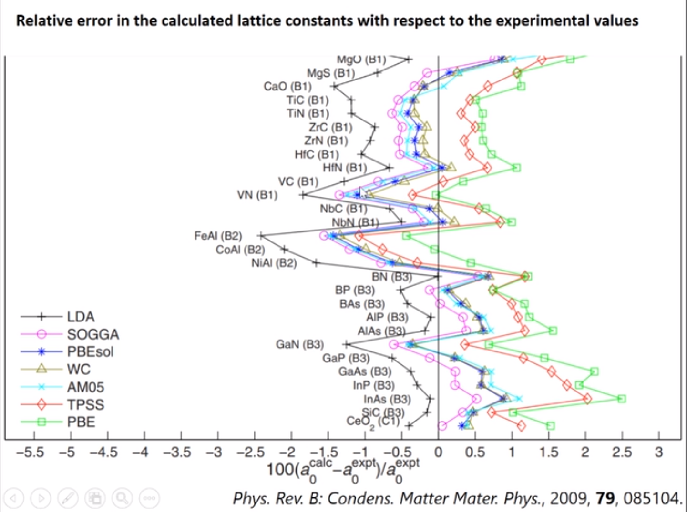

Chapter 3 Convergence & Optimization
为何要做晶胞结构优化：LDA往往低估晶格参数，PBE往往高估。所以在ICSD上获得的实验结构可以采用直接做计算或者先优化再计算

有两种方法，其一，在INCAR里设置ISIF=3，第二个是拟合Birch-Murnaghan状态方程（http://www.bigbrosci.cn/newsitem/278011633）
主要设置参数：SYSTEM、ISTART、ICHARG、ENCUT、ISMEAR、SIGMA
- SCF：EDIFF，NELMIN，NELMDL（开始非自洽步个数），NELM
- ion step：EDIFFG，IBRION（离子步怎么优化），POTIM（MD才设定），NSW，ISIF（可动哪些参数）
- 分类：收敛标准：EDIFF，EDIFFG；步数：NELM*，NSW。